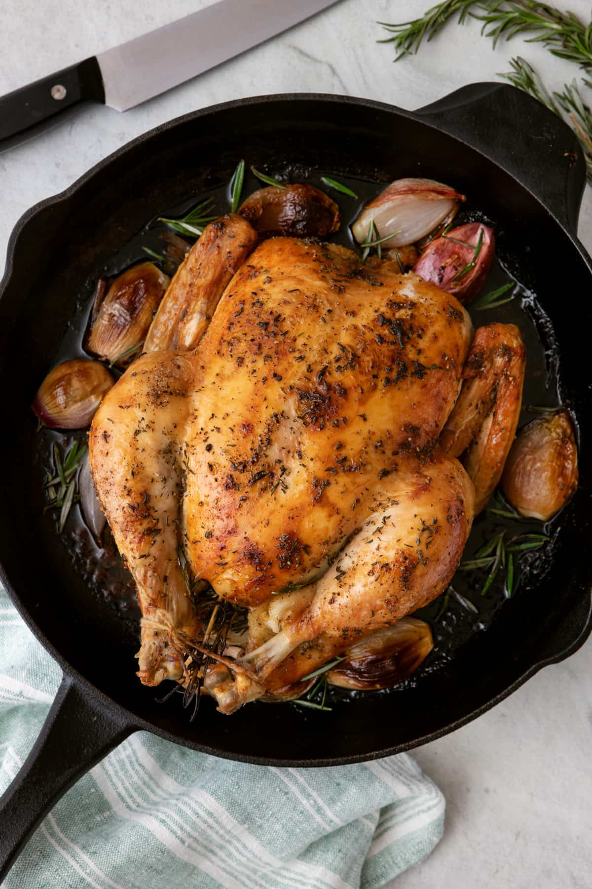
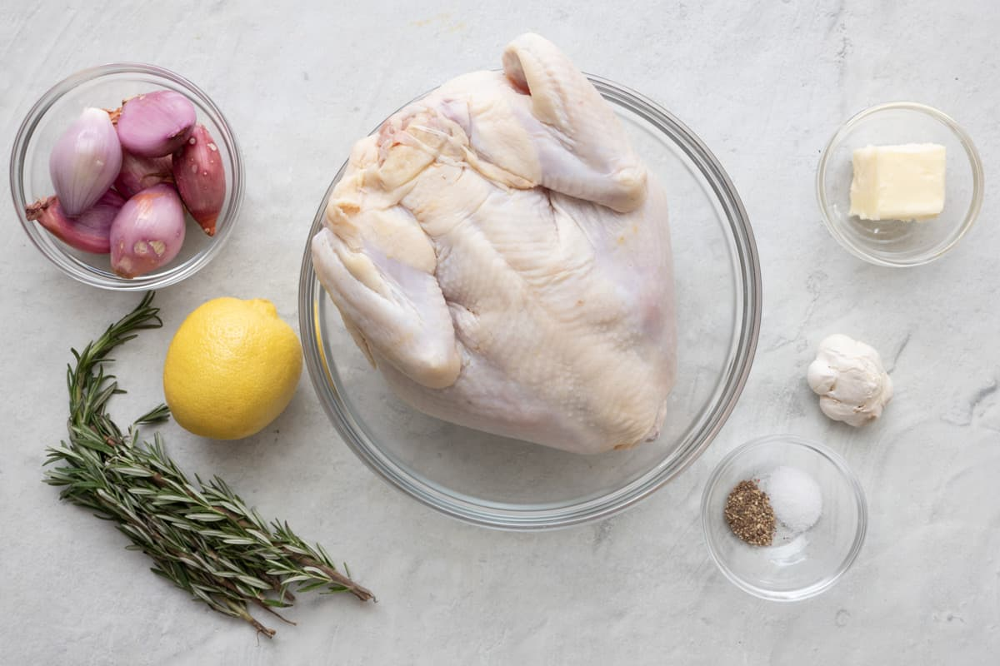
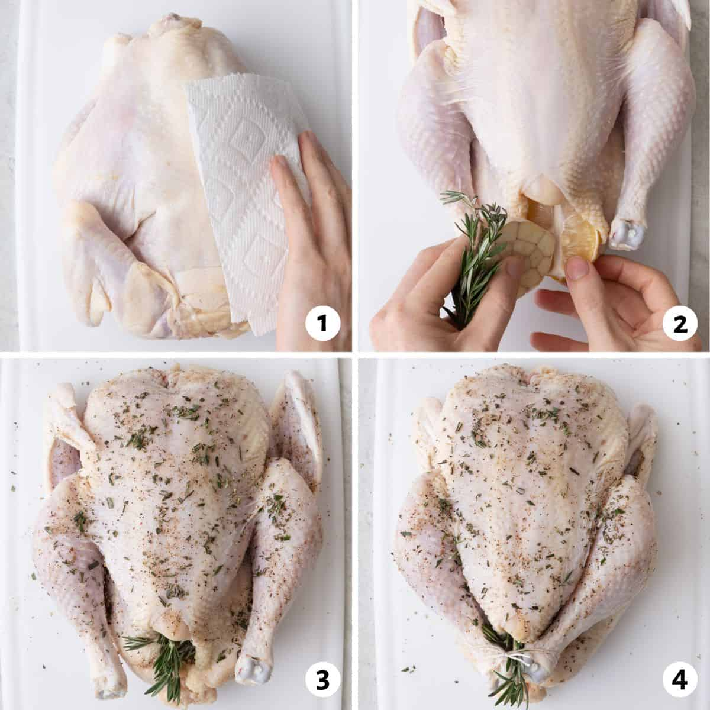

A crispy looking roasted chiken with romary and shallots in an iron pan with carving knife nearby.
This Lemon Rosemary Roasted Whole Chicken, has the best crispy, buttery skin and juicy meat cooked over shallots for an easy chicken dinner prepared in one pan.
There is so much flavor in this Roasted Whole Chicken with fresh rosemary, lemon, garlic, and shallots. While roasting, the aromatics infuse the meat and the butter crisps the skin for the juiciest chicken dinner, all cooked in one pan. My favorite part of this easy whole-roasted chicken recipe is the butter melting into the bottom of the pan with chicken drippings and shallots. You can make one delicious gravy to spoon over the chicken and pair it with some tasty sides.
If you’re looking for a family-friendly chicken recipe full of flavor, easy to make, and a true show-stopper, then this simple lemon herb whole-roasted chicken dish is exactly what you need. Pair with a vegetable and a side like roasted potatoes or broccoli macaroni and cheese for a meal that will please kids and adults alike!

Image of the ingredients for the roasted chicken.
Ingredients to make roasted whole chicken
Whole Chicken: For best results, remove the whole chicken from the fridge and set it on the counter to come to room temperature before cooking.
Shallots: Shallots have a mild, delicate flavor that I love using with chicken. For a similar flavor, you can use any onion, such as red, white, or yellow onions.
Aromatics: Lemon, garlic, and rosemary. These three ingredients bring out the best flavor and scent of the chicken from the inside.
Butter: For the crispiest and most tasty skin, slather butter over the chicken skin before roasting.
Salt & Pepper: This is all you need because of the aromatics you’re using. But feel free to add other seasonings like paprika, onion powder, or oregano.
How to make roasted whole chicken
Before the chicken makes its way to the oven, you’ll want to pull it from the fridge and rest it at room temperature for at least 30 minutes for even cooking. I like to use a heavy-duty pan for cooking in the oven, and a large cast iron skillet works perfectly for roasting a whole chicken in.
Season and prepare the chicken for roasting

Images depicting the preparation process.
Preheat the oven to 425°F / 220°C
Prep the chicken by patting it dry with paper towels.
Fill the cavity with rosemary sprigs, lemon, and garlic.
Season the surface generously with butter, salt and pepper and the remaining rosemary.
Tie the legs together twice and tuck the wing tips back.
Put whole chicken in cast iron skillet and then in the oven.
As a guide, roast the first 15 minutes at 220°C/ 425°F, and reduce the temperature to 165°C / 325°F. Calculate 20 minutes for every 1lb of chicken until juice run clear or the internal temperature reaches 165°F / 75°C.
Roast until the chicken is golden brown, and the shallots are caramelized. Be sure to rest the chicken before cutting it.